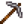
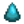

Frozen Tear
| Frozen Tear | |
| A crystal fabled to be the frozen tears of a yeti. | |
| Information | |
| Source |  The Mines (floors 40-79)  Frozen Geode |
| Sell Price | |
The Frozen Tear is a Mineral that can be found:
- via foraging in The Mines between floors 40 and 79.
- from slain Dust Sprites in The Mines (2% chance).
- in containers in The Mines between floors 40 and 79 after the player has reached the bottom of The Mines (4.62% chance)
- by panning (4.9% chance).
- in Frozen Geodes (6.25% chance) and Omni Geodes (2.0833% chance).
- in Fishing Treasure Chests (4% chance).
- occasionally in a Garbage Can after the player has reached the bottom of The Mines.
- in an Ice Pip Fish Pond, which may produce 5 Frozen Tears when the population of the pond reaches 9.
- through the mail from the Wizard at any friendship level greater than zero friendship points.
- at the Statue Of Endless Fortune on Winter 10, Sebastian's birthday.
- as an item sometimes sold for
 2,500g from Pierre's booth at the Feast of the Winter Star.
2,500g from Pierre's booth at the Feast of the Winter Star.
Frozen Tear can be destroyed by bombs.
Gifting
| Villager Reactions
| |
|---|---|
| Love | |
| Like | |
| Dislike | |
Bundles
Frozen Tear is used in the  Geologist's Bundle in the Boiler Room.
Geologist's Bundle in the Boiler Room.
Recipes
| Image | Name | Description | Ingredients | Recipe Source |
|---|---|---|---|---|
| Warrior Ring | Occasionally infuses the wearer with "warrior energy" after slaying a monster. |
Tailoring
Frozen Tear is used in the spool of the Sewing Machine with Cloth in the feed to create a Dark Jacket. It is a cyan dye when used in the spool of the Sewing Machine with a dyeable clothing item in the feed. It can be placed in the blue dye pot at Emily's and Haley's house for use in dyeing.
Quests
- Frozen Tear may be randomly requested during any season at the "Help Wanted" board outside Pierre's General Store for a reward of 225g and 150 Friendship points.
- 2 Frozen Tears may be requested by Blobfish in a Fish Pond quest to increase the capacity of the pond from 1 to 3.
- 5 Frozen Tears may be requested by Ice Pip in a Fish Pond quest to increase the capacity of the pond from 3 to 5.
History
- 1.3.27: Can now be found in Omni Geodes.
- 1.4: Can now be used in Tailoring. Can be requested in Fish Pond quests. Can be produced by Fish Ponds.
- 1.6: Now sometimes sold at the Feast of the Winter Star.
| Minerals | |
|---|---|
| Foraged Minerals | Earth Crystal • Fire Quartz • Frozen Tear • Quartz |
| Gems | Amethyst • Aquamarine • Diamond • Emerald • Jade • Prismatic Shard • Ruby • Topaz |
| Geode Minerals | Aerinite • Alamite • Baryte • Basalt • Bixite • Calcite • Celestine • Dolomite • Esperite • Fairy Stone • Fire Opal • Fluorapatite • Geminite • Ghost Crystal • Granite • Helvite • Hematite • Jagoite • Jamborite • Jasper • Kyanite • Lemon Stone • Limestone • Lunarite • Malachite • Marble • Mudstone • Nekoite • Neptunite • Obsidian • Ocean Stone • Opal • Orpiment • Petrified Slime • Pyrite • Sandstone • Slate • Soapstone • Star Shards • Thunder Egg • Tigerseye |
| Geodes | Geode • Frozen Geode • Magma Geode • Omni Geode |